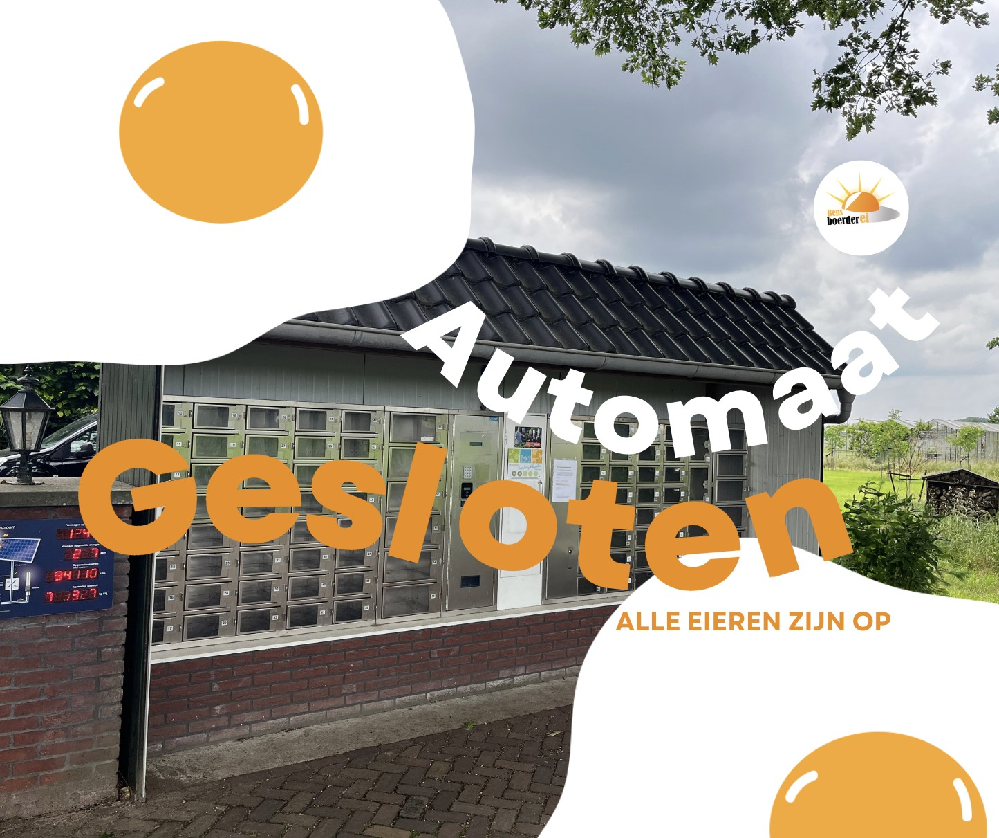
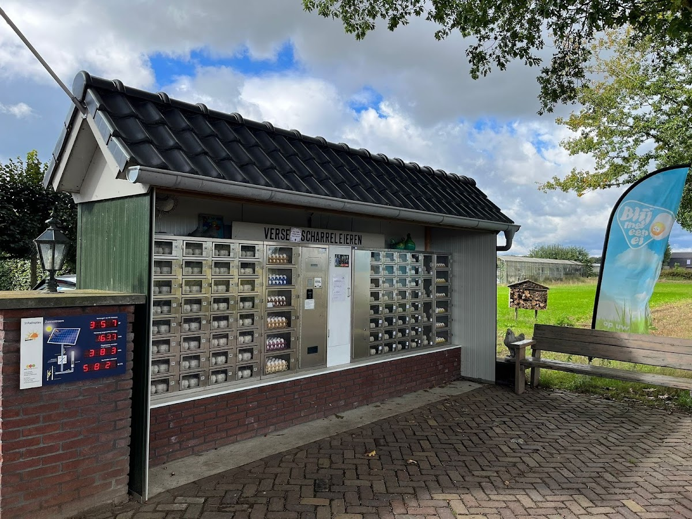
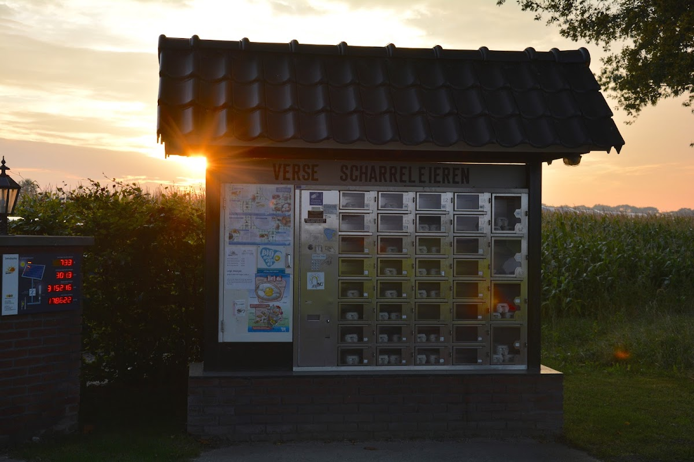

Eierlokaal
Routebeschrijving
Verse eieren 24/7 aan de Beerseweg
Wij verkopen onze eieren aan de weg. Verser vindt u ze niet! Via ons eierlokaal (eierautomaat) kunt u 6 of 12 eieren kiezen — betaalbaar met pin of muntgeld.
Kies uit 6 of 12 eieren per verpakking
Betalen met pin (kleine eieren) of muntgeld
Altijd bijgevuld en schoon — 24/7 beschikbaar
Dubbeldooiers regelmatig beschikbaar — een aanrader!



